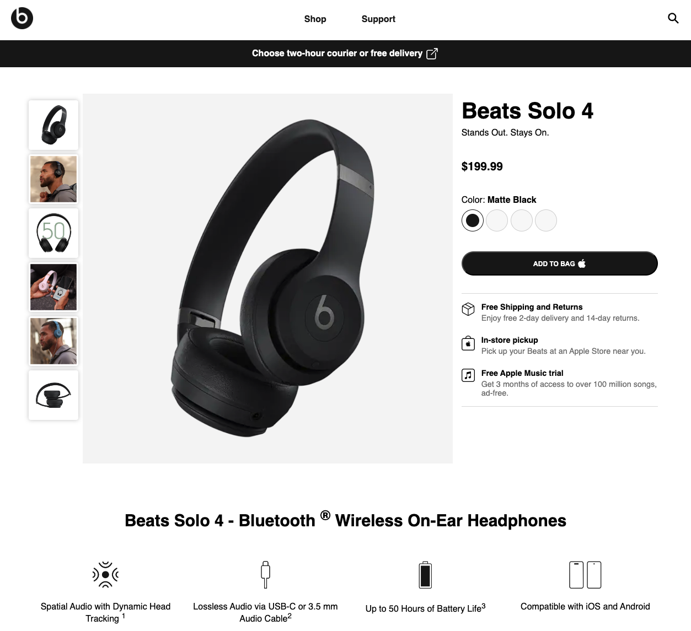

This project is a design clone of the Beats Solo 4 headphones product page. The aim was to replicate its clean and modern design, while focusing on responsiveness and user experience. This project was a induvidual student assignment for Høyskolen Kristiania.

Process
The challenge for this project was to replicate the visual style and layout of the original Beats Solo 4 page while simplifying some elements to fit the scope of the assignment. The final version includes a main product page and a fictional checkout page to simulate a real-world e-commerce experience.
I started by analyzing the structure of the original website, breaking it into key components, such as the product description, images, and pricing section. Once the design layout was planned, I implemented the project using vanilla HTML and CSS, ensuring every detail was polished.
Code
The project primarily focused on static content, but included dynamic touches like hover effects and responsive scaling for different devices. I aimed for a modular CSS approach, with styles for grids, images, and typography being reusable across the pages.
The website was thoroughly tested on both desktop and mobile devices to ensure it maintained a consistent look and feel, regardless of screen size.
Links
Published website: https://sbraende-beats-solo.netlify.app/
GitHub repository: https://github.com/sbraende/beats-solo-clone